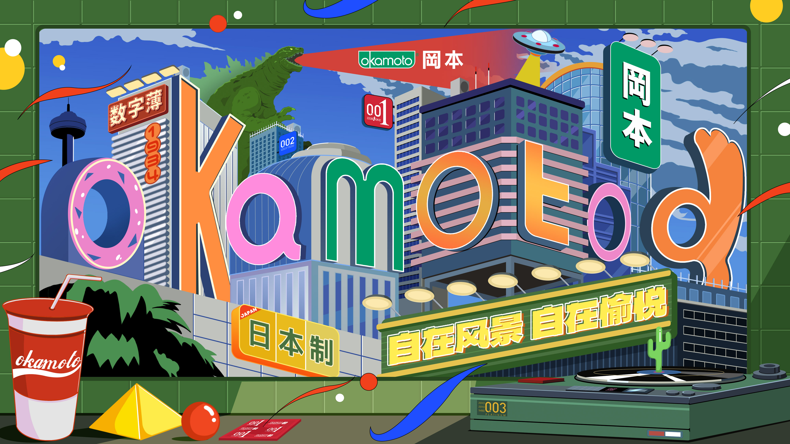
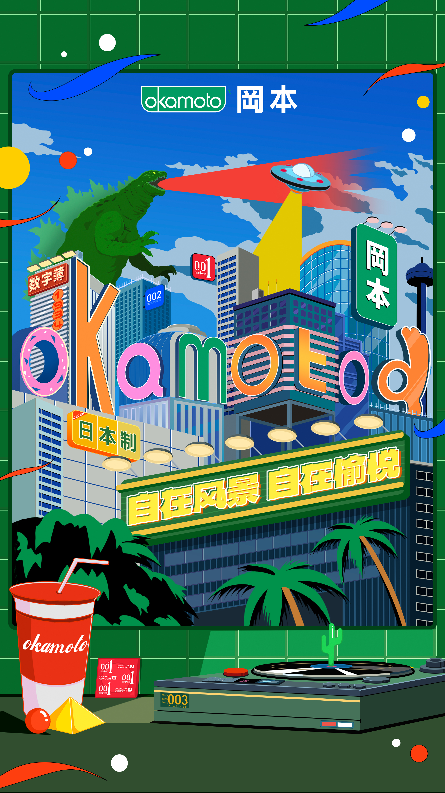
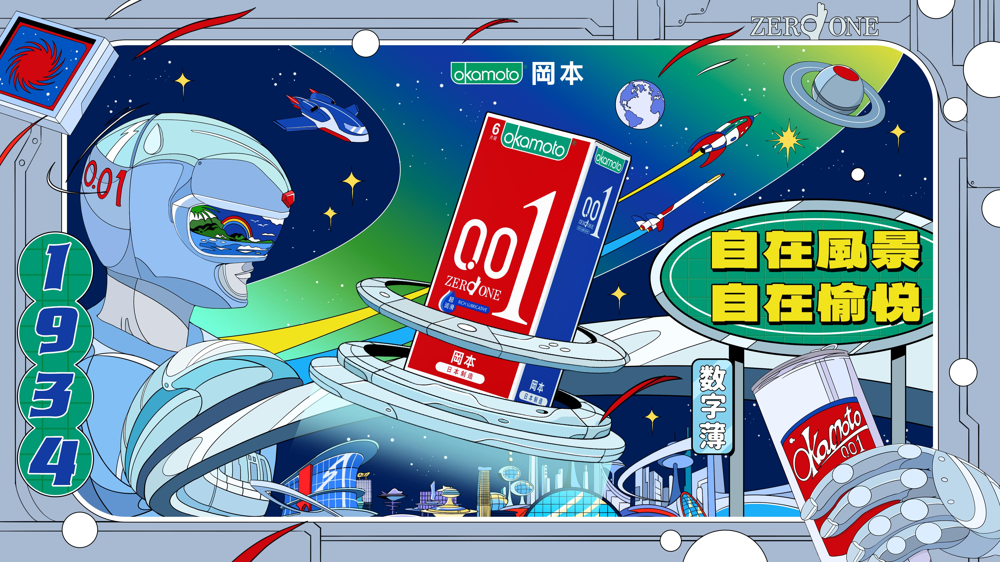
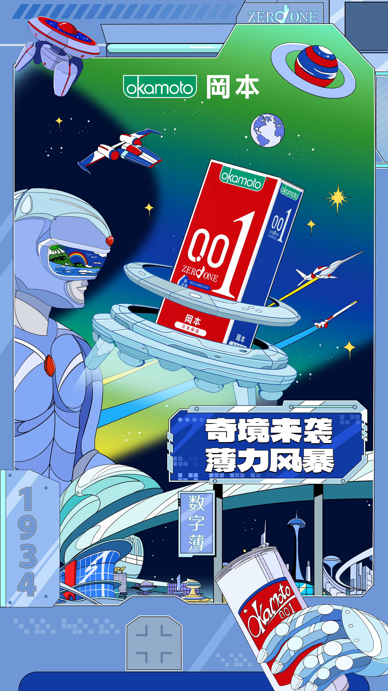

ILLUSTRATION / CAMPAIGN VISUALS / MOTION
A city in
full colour.
City Pop inspired posters and motion for Okamoto, featuring the 001 product and a three-product series.

THE THREE-PRODUCT SERIES
Welcome
to the city.
Playful city imagery and bold colour carry across horizontal and vertical formats.

OKAMOTO 001
Another
world.
A space-inspired visual for the 001 campaign, developed across poster formats and motion.


MOTION
In motion.
The 001 visual world in video.